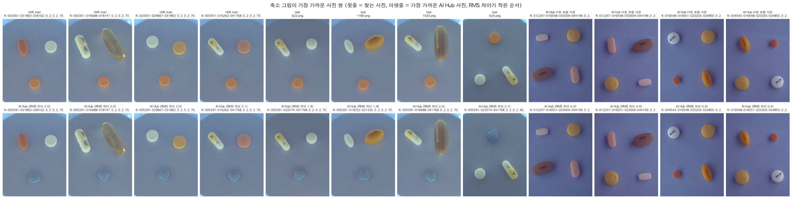

1
/
0
부록
부록: AI Hub와 Kaggle 사이에 같은 파일은 없습니다

확인 항목
결과
Kaggle train과 같은 이름의 PNG / 겹치는 조합
0 / 232, 0 / 114
파일 내용(MD5)이 같은 사진: AI Hub vs Kaggle train, test, AI Hub
모두 0
축소 그림 RMS: train에서 가장 가까운 AI Hub 사진
최소 2.0, 중앙값 6.2
축소 그림 RMS: AI Hub 다른 조합끼리
최소 0.4 (같은 장면이 다른 조합 이름으로 들어감 → 제거)
▦
← →/Space 이동 · N 노트 · Esc 목차
SPEAKER NOTES